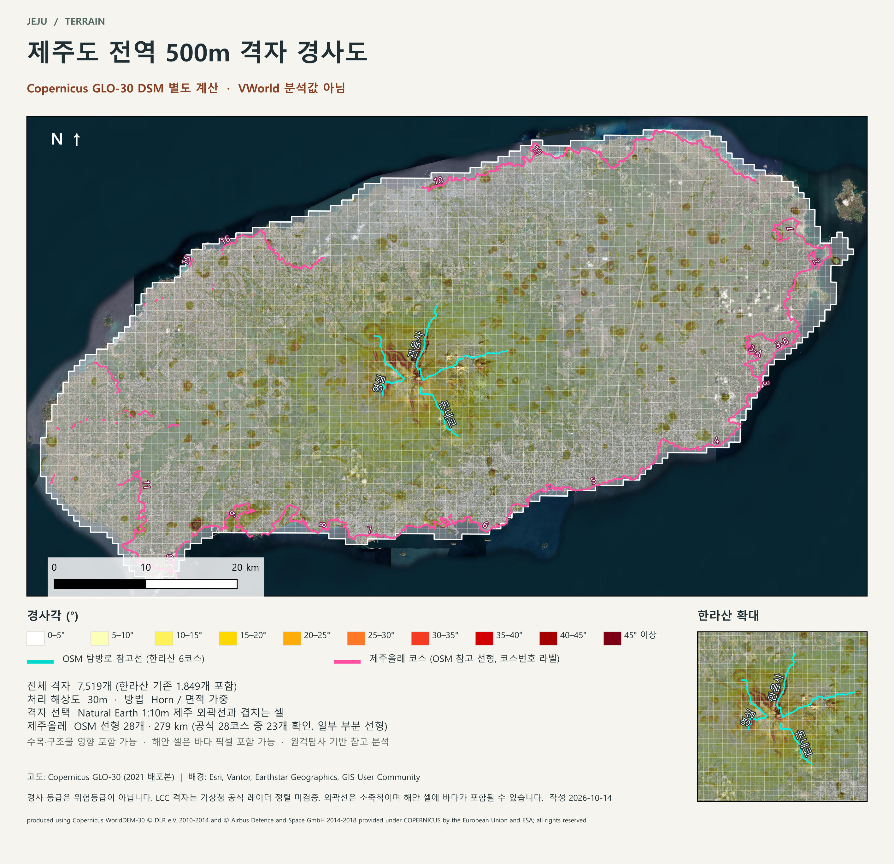

JEJU / TERRAIN · 작성 2026-10-14
제주도 전역 500m 격자 경사 자료
ZIP 구조 · QGIS 레이어 · 폴리곤 시각화 안내
ZIP을 푼 뒤 jeju_slope.qgs를 QGIS의 프로젝트 → 열기로 여세요. 색상·라벨·레이어 순서가 모두 저장되어 있어 바로 아래 지도가 나타납니다. QGIS 4.2.0에서 확인했습니다.
1. 결과 요약
제주 외곽선과 겹치는 500 m 격자 7,519개(한라산 기존 1,849개 포함)에 Copernicus GLO-30 DSM으로 계산한 30 m 경사각을 집계했습니다. 면적 가중 평균 경사 4.98°, 최대 64.4°, 고도 범위 -2–1923 m, 등급 폴리곤 78,054개입니다.
경사 등급별 면적

여기서 경사는 DSM 표면의 지형 경사입니다. 나무·건물이 포함된 표면 모델이며 보행 경사나 공식 위험등급이 아닙니다. 해안 격자에는 바다 픽셀(고도 약 0 m, 경사 0°)이 포함되어 평균이 낮아집니다. 격자는 가정 LCC 좌표계이며 기상청 공식 격자와의 정렬은 검증되지 않았습니다.
2. ZIP을 푼 다음 무엇을 열어야 하나요?
jeju_slope_QGIS_SHP.zip을 한 폴더에 통째로 풉니다. 폴더 이름과 파일 위치를 바꾸지 마세요. 프로젝트가 상대경로로 파일을 찾습니다.- QGIS에서 프로젝트 → 열기 → jeju_slope.qgs를 선택합니다. SHP 하나만 드래그하면 스타일 없이 열립니다.
- 레이어 패널의 체크박스로 래스터·공원 경계·지명을 켜고 끌 수 있습니다. 어떤 레이어가 '찾을 수 없음'으로 뜨면 ZIP이 부분적으로 풀린 것이니 다시 푸세요.
- 인쇄용 지도는 프로젝트 → 레이아웃 관리자 → 제주도 전역 경사도 위성지도에 저장되어 있습니다. PNG·PDF로 다시 내보낼 수 있습니다.
- SHP만 다른 프로젝트에서 쓰려면 같은 이름의
.qml을 레이어 속성 → 스타일 → 스타일 불러오기로 적용하면 같은 색이 됩니다.
3. 폴더 구조
jeju_slope/
├─ START_HERE.html ← 이 안내
├─ jeju_slope.qgs ← QGIS 프로젝트 (모든 레이어·색상·라벨 포함, 상대경로)
├─ jeju_slope_satellite.png ← 완성 지도 이미지 (2834×2740)
├─ jeju_grid_slope.csv ← 격자 7,519행 통계 (SHP 속성과 동일 값)
├─ jeju_slope_classes.csv ← 10개 등급별 면적
├─ jeju_olle_summary.csv ← 올레 코스별 길이·경사 요약
├─ olle_coverage.json ← OSM에 있는/없는 올레 코스 목록
├─ field_dictionary.csv ← 격자 칼럼 사전
├─ metadata.json ← 출처·방법·한계 전체 기록
├─ validation.json / delivery_validation.json ← 검증 결과
├─ dem_30m.tif · slope_degrees_30m.tif · aspect_degrees_30m.tif ← 30 m 래스터
├─ satellite_background.tif ← 배경영상 (지오레퍼런스된 JPEG-in-TIFF)
└─ shapefiles/
├─ grid_slope_500m.shp/.shx/.dbf/.prj/.cpg + .qml ← 격자 + 저장된 스타일
├─ slope_classes.* + .qml ← 등급 폴리곤
├─ reference_olle.* + .qml ← 올레 코스
├─ reference_trails.* · reference_park.* · reference_labels.* + .qml
└─ study_boundary.* + .qml
SHP는 .shp(도형) .shx(색인) .dbf(속성) .prj(좌표계) .cpg(UTF-8 인코딩) 다섯 파일이 한 세트입니다. .qml은 QGIS 스타일 파일로 데이터가 아니라 색상·라벨 정의만 담습니다. 좌표계는 벡터·분석 래스터가 EPSG:32652(UTM 52N), 배경영상이 EPSG:3857이며 프로젝트가 즉시 변환합니다.
5. 폴리곤·격자·래스터 시각화 방법
A. 경사 등급 폴리곤 (slope_classes)
저장된 스타일은 범주화(Categorized) 렌더러로 class_id 1–10에 아래 색을 대응시키고 투명도를 62%로 두어 위성영상이 비치게 합니다. 직접 만들려면 레이어 속성 → 심볼 → 범주화 → 값 class_id → 분류 → 각 범주 색을 지정합니다. 등급 경계(5° 간격)를 유지해야 한라산 번들과 색 의미가 같습니다.
특정 등급만 보려면 레이어 속성 → 소스 → 피처 필터(쿼리 작성기)에 "class_id" >= 5(20° 이상)처럼 입력합니다. 면적이 큰 폴리곤부터 찾으려면 속성표에서 area_m2를 내림차순 정렬합니다.
B. 500 m 격자 단계구분도 (grid_slope_500m)
저장된 스타일은 외곽선만 그립니다. 격자를 색으로 채우려면 단계구분(Graduated) 렌더러에서 값 mean_deg(평균) 또는 max_deg(최대), p90_deg(90백분위)를 고르고 모드를 '동일 간격' 또는 '자연 분류(Jenks)'로 5–7단계 나눕니다. 제주 전역은 0–5°가 66%라서 '분위수' 모드는 평지 안의 작은 차이를 과장하므로 비교 목적이면 고정 구간(0, 2, 5, 10, 15, 20, 30°)을 권합니다. 투명도 40–50%를 주면 영상과 함께 읽기 쉽습니다.
등급별 면적비율 칼럼(p00_05 … p45_plus)으로 "급경사 비율이 높은 격자"를 찾을 수 있습니다. 예: 필터 "p20_25" + "p25_30" + "p30_35" + "p35_40" + "p40_45" + "p45_plus" >= 20. 한라산 기존 격자만 보려면 inputs/reference/jeju_grid_cells.gpkg의 in_hallasan 필드를 조인하거나 "i_ref" BETWEEN 1202 AND 1244 AND "j_ref" BETWEEN 651 AND 693을 사용합니다.
C. 래스터 (slope_degrees_30m · dem_30m · aspect_degrees_30m)
레이어 속성 → 심볼 → 렌더 유형 단일밴드 의사색상, 보간 '이산', 최소 0 최대 45, 색상표 'Spectral' 반전 또는 위 10색을 5° 간격으로 추가하면 폴리곤 등급과 같은 그림이 됩니다. 값 -9999는 NoData로 등록되어 있어 투명하게 처리됩니다. DSM은 '음영기복도(Hillshade)' 렌더 유형으로 바꾸면 지형감을 더합니다. 경사향은 0–360° 순환 색상표(예: 'Cyclic')가 적합합니다.
D. 라벨·순서·투명도
레이어 순서는 위에서부터 올레 코스 → 탐방로 → 분석 범위 → 격자 → 등급 폴리곤 → 배경영상입니다. 폴리곤을 격자 위로 올리면 격자선이 가려지므로 순서를 유지하세요. 탐방로와 올레 코스는 선을 따라 이름·코스번호 라벨이 붙어 있으며 라벨 패널에서 글꼴 크기(현재 9pt·8pt)를 바꿀 수 있습니다.
6. 제주올레 코스 레이어
OSM(OpenStreetMap)의 제주올레 루트 릴레이션과, 릴레이션 없이 이름만 붙은 길(way)을 코스 번호로 묶어 만들었습니다. 총 28개 선형, 279.3 km입니다. OSM에 없는 공식 코스: 1-1, 7-1, 17, 18-1, 21. 이름 붙은 길로만 복원한 코스(끊김·누락 가능): 10-1, 12, 13, 14-1, 15, 15-A, 15-B.
코스별 경사는 선형을 따라 10 m 간격으로 경사 래스터를 표본화한 값입니다(표본 1개 = 10 m). 한라산 6코스 분석(outputs/hallasan_course_slope_v2)의 정확한 픽셀 분할 방식보다 거친 추정이며, 길의 진행 방향 경사가 아니라 그 지점 지형의 최대 경사입니다. OSM 선형은 공식 제주올레 경로·우회로·현재 개방 상태와 다를 수 있습니다.
시각화: reference_olle 레이어를 단계구분 렌더러로 mean_deg에 따라 색을 바꾸거나, 필터 "course" IN ('7','8','9')처럼 코스를 골라 볼 수 있습니다. 속성표의 steep20_m이 큰 코스부터 정렬하면 급경사가 많은 코스를 찾습니다.
7. 칼럼 사전
grid_slope_500m.shp · jeju_grid_slope.csv
slope_classes.shp
reference_olle.shp · jeju_olle_summary.csv
study_boundary.shp
SHP 칼럼 이름은 10자 제한으로 축약되어 있고 CSV에는 전체 이름이 있습니다. CSV와 SHP의 값은 같습니다(검증: delivery_validation.json).
8. 출처·방법·한계
- 고도: Copernicus GLO-30 DSM 타일 N33/E126 (2021 AWS 배포본). produced using Copernicus WorldDEM-30 © DLR e.V. 2010-2014 and © Airbus Defence and Space GmbH 2014-2018 provided under COPERNICUS by the European Union and ESA; all rights reserved.
- 배경: Esri World Imagery (Esri, Vantor, Earthstar Geographics, GIS User Community). 촬영 시기가 섞인 모자이크이며 표시용입니다.
- 격자: 한라산 격자와 같은 가정 LCC(표준위선 30°/60°, R=6371008.77 m, 기준셀 i0=1121/j0=1681). Natural Earth 1:10m 제주 외곽선(퍼블릭 도메인)과 겹치는 셀만 선택해 소축척 해안선의 한계를 그대로 가집니다.
- 탐방로·올레·공원·지명: © OpenStreetMap contributors, ODbL. 완전성·최신성 미검증.
- 방법: UTM 52N 30 m 쌍선형 재투영 → GDAL Horn 경사 → 격자별 정확한 교차면적 가중 통계. 등급 폴리곤은 셀 합집합 안의 픽셀로 잘라 바다 바깥을 제외했습니다. 상세는
metadata.json, 검증은 validation.json.
- 이 자료는 탐방 통제·안전 판단·공식 난이도를 대신하지 않습니다.